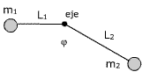

|
La masa de 3 kg está
unida a una varilla, de masa despreciable y longitud 1 m, con un
eje perpendicular al plano de la pantalla que pasa por su ex-tremo
libre
Calcula el momento sobre el sistema y su aceleración angular |
|
Una barra de 4 m y masa despreciable tiene
un apoyo en su punto medio. En los extremos se suben un niño de
masa m1 = 30 kg y otro de masa m2 = 40 kg. Se suelta
la barra, calcular el momento sobre
la barra y su aceleración angular |
|
Suponiendo despreciable
la masa de la varilla, calcula el momento sobre el sistema y su
aceleración angular
Datos:
m1 = 3 kg, m2 = 2 kg, L1 = 1 m,
L2 = 2 m, φ = 30º |
|
Una varilla homogénea de masa m
y longitud L tiene un eje, perpendicular por un extremo, que le permite
girar en un plano vertical. Calcula el momento sobre la varilla y su aceleración
angular cuan-do esta forma un ángulo α bajo la horizontal |
Un disco homogéneo, m = 5 kg, R
= 1m, puede girar alrededor de un eje horizontal que pasa por su c.d.m.
Tangencialmente al disco se aplica una fuerza de 4 N, calcula el momento
sobre el disco y la aceleración angular que tomará este |
 |
Suponiendo despreciable
la masa de la varilla, calcula el momento sobre el sistema y su
aceleración angular
Datos:
m1 = 1 kg, m2 = 2 kg, L1 = 2 m,
L2 = 2 m, φ = 120º |
|
Una rueda de 1 m de radio, lleva sujetos
en los extremos de un diámetro dos cohetes que al arder ejercen
fuerzas tangenciales de 0.25 kp en sentidos contrarios. Calcula el momento
que actúa sobre la rueda y su aceleración angular. Momento
de inercia de la rueda: 4 kg·m2 |
Una esfera homogénea, m = 1 kg, R = 1
m, gira alrededor de su diametro a 600 r.p.m. Tangencial-mente se le aplica
una fuerza constante de frenado de 100 N. Calcular:
a) Aceleración
angular de frenado
b) Vueltas que da hasta pararse y tiempo que
tarda en hacerlo
|